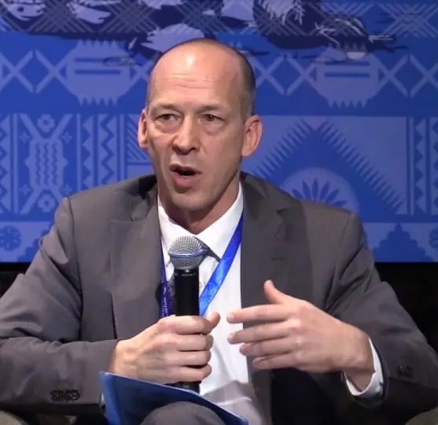

The Genius Wave is a 7-minute audio program designed to help unlock your brain's natural potential. Created by neuroscientist and former NASA researcher Dr. James Rivers, it combines advanced audio technology, including isochronic tones and binaural beats, to gently guide your brain into the theta frequency range (4–8 Hz).
By encouraging your brain to enter this deeply relaxed state, The Genius Wave may help improve focus, boost creativity, reduce stress, and promote greater mental clarity. Whether you're looking to enhance meditation, increase productivity, or support personal growth, this easy-to-use daily audio program provides a simple way to train your mind for better performance and overall well-being.
Within just one week of listening daily, I began noticing a significant improvement in my ability to concentrate. Tasks that once took me an hour now take around 40 minutes, and I feel much calmer throughout the day. Spending only seven minutes each day has been easy to fit into my routine. I've also become more organized, less overwhelmed by my workload, and better able to stay focused. The feeling of relaxation and mental clarity often lasts well beyond each listening session.
Working as a regional sales manager means juggling client calls, presentations, reports, and tight deadlines every day. After using The Genius Wave each morning for about three weeks, I noticed a meaningful improvement in my focus and mental clarity during meetings. I also felt less mentally drained by the end of the day. My colleagues commented that I seemed calmer and more composed under pressure, and I've found it much easier to stay organized and productive while consistently keeping up with my monthly goals.
As a freelance writer, staying creative and maintaining focus are essential to my work. After incorporating The Genius Wave into my daily routine for two weeks, I found it much easier to overcome creative blocks and get words on the page. My ideas seem to flow more naturally, I can stay focused for longer periods, and completing writing projects feels much less overwhelming. Meeting deadlines has become easier, and my overall productivity has noticeably improved.
The Genius Wave is a 7-minute audio program designed to support relaxation, focus, and mental clarity through brainwave entrainment technology. By combining isochronic tones and binaural beats, The
Genius Wave aims to encourage the brain to enter the theta frequency range (4–8 Hz), a state commonly associated with deep relaxation, creativity, and meditation.
Unlike complicated self-improvement routines, The Genius Wave requires only a few minutes each day. Simply listen to the digital audio track using headphones or speakers as part of your daily routine. Many users choose to use The Genius Wave before work, studying, meditation, or creative activities to help them feel more focused and mentally refreshed.
One of the biggest advantages of The Genius Wave is its simplicity. The program is delivered digitally, making it easy to use at home, in the office, or while traveling. Students, professionals, entrepreneurs, and anyone interested in personal development can easily incorporate The Genius Wave into their everyday schedule.
According to its creators, The Genius Wave is designed to promote a calmer state of mind, improve concentration, encourage creative thinking, and support overall mental well-being. While individual experiences vary, many users report feeling more relaxed, less mentally overwhelmed, and better able to maintain focus after consistent daily use.
Whether your goal is to improve productivity, reduce everyday stress, strengthen your meditation practice, or support better mental performance, The Genius Wave offers a convenient audio-based approach that fits into almost any lifestyle.
To provide additional peace of mind, The Genius Wave includes a 90-day money-back guarantee, allowing new users to try the program with minimal financial risk. If you're looking for a simple brainwave audio program to complement your personal growth routine, The Genius Wave may be worth exploring.
The Genius Wave is a modern brainwave audio program designed to promote relaxation, focus, and mental clarity through brainwave entrainment technology. By combining isochronic tones and binaural beats, The Genius Wave aims to encourage your brain to enter the theta frequency range, a state commonly associated with creativity, deep relaxation, and mindful awareness.
Unlike routines that require extensive practice or dedicated training, The Genius Wave is designed to fit easily into your daily schedule. Each session lasts just seven minutes, making it simple to incorporate into your morning routine, study sessions, work breaks, or meditation practice.
With consistent use, many users report feeling more focused, mentally refreshed, and better able to manage everyday stress. The Genius Wave is intended to support concentration, creative thinking, and a calmer mindset, helping you approach daily tasks with greater confidence and clarity. Individual experiences may vary, but regular listening can become a valuable part of a healthy personal development routine.
Using The Genius Wave is straightforward. Simply find a quiet place, put on your headphones, and listen to the audio session without distractions. The program is delivered digitally, allowing you to enjoy it at home, in the office, or while traveling.
Whether your goal is to improve productivity, strengthen your meditation practice, encourage creative thinking, or simply enjoy a few minutes of relaxation each day, The Genius Wave offers a convenient, science-inspired approach that fits almost any lifestyle. By making it part of your daily routine, you may discover greater mental clarity, improved focus, and a more balanced state of mind over time.
Click here to unlock your Abilities
The Genius Wave stands out because it was created by Dr. James Rivers, a neuroscientist and former NASA researcher with experience in brain science and audio-based brainwave technology. Drawing on years of research, the program was designed to use sound patterns that encourage the brain to enter a relaxed theta brainwave state, making it different from many traditional self-improvement methods.
One of the most appealing features of The Genius Wave is its simplicity. Each audio session lasts only seven minutes, making it easy to fit into even the busiest schedule. Instead of requiring lengthy meditation sessions or complex routines, the program offers a convenient way to incorporate brainwave entrainment into your daily life.
The Genius Wave combines binaural beats and isochronic tones to promote a calm and focused mental state. According to its creators, regular listening may help support concentration, creative thinking, relaxation, and overall mental clarity. While results vary from person to person, many users report feeling more focused, less stressed, and better able to stay productive after making the program part of their routine.
Another reason The Genius Wave has gained popularity is its accessibility. Whether you're a student, working professional, entrepreneur, or simply interested in personal development, the digital audio sessions can be used almost anywhere with a quiet environment and a pair of headphones. By blending neuroscience-inspired audio technology with a quick daily routine, The Genius Wave offers a practical approach for anyone looking to support their mental performance and overall well-being.
The Genius Wave was created by Dr. James Rivers, who is presented as a neuroscientist and former NASA researcher with decades of experience studying the brain and cognitive performance. According to the program's creators, Dr. Rivers has spent many years researching brainwave activity and developing audio-based techniques designed to support focus, relaxation, and mental clarity.
Throughout his career, Dr. Rivers has reportedly worked with business leaders, athletes, and other high-performing individuals, helping them improve concentration, productivity, and overall mental performance. His research and experience form the foundation of The Genius Wave, combining neuroscience-inspired concepts with modern brainwave entrainment technology.
The Genius Wave brings together this knowledge in a convenient 7-minute audio program that can be used from the comfort of your home. Rather than requiring lengthy training or complex routines, the program is designed to fit easily into everyday life. By listening consistently, users can incorporate brainwave audio sessions into their personal development routine with minimal time commitment.
Whether you're looking to improve focus, encourage creative thinking, reduce everyday stress, or support your overall mental well-being, The Genius Wave offers a simple and accessible approach based on the principles behind brainwave entrainment technology.
The Genius Wave works on the powerful principle of using soundwaves to unlock your inner genius. Dr. James Rivers tested multiple ways of stimulating theta brainwave activity, including machines and electrical methods, but found that carefully designed audio files were the most effective and accessible solution.
Traditionally, brain entrainment requires up to an hour to achieve theta activity. However, Dr. Rivers and his team of PhDs and engineers refined the process into a 7-minute audio session without losing effectiveness. During this time, the audio synchronizes with your brainwaves, activating theta patterns linked to creativity, focus, relaxation, and mental clarity.
All it takes is setting aside 7 minutes a day. By listening regularly, The Genius Wave trains your brain to enter this optimal state effortlessly, helping you unlock powerful benefits for memory, learning, emotional well-being, and overall performance.
With The Genius Wave Program , get 100% satisfaction or a 90-day money-back guarantee. We trust our program and give a 90-day money-back guarantee within 90 days of your purchase of the Genius Wave Wave Program. So, hurry and buy one for yourself to unlock your brains potential and enjoy high thinking abilities, a focused mind, completely risk-free.
Claim your complimentary copy of Attracting Money and Wealth, a legendary book on financial success written over 100 years ago. This timeless classic—said to have inspired The Secret—reveals practical principles for drawing prosperity rather than chasing it. Normally $20 on Amazon, it’s yours completely free when you secure your Genius Wave order today.
Receive a powerful guided visualization created by one of the top-rated contributors on the Calm App. This audio session helps you picture your ideal future—shaping the key areas of life that matter most: money, love, health, and happiness. It’s the perfect complement to The Genius Wave, empowering you to mentally “see†success before it becomes reality.
Your third bonus is a beautifully crafted infographic highlighting the five essential habits for building the life you desire. Simply print it out, hang it where you’ll see it daily, and let it serve as a constant reminder to stay focused on your path to success.

You’ll never be able to buy
The Genius Wave Cheaper than Today!
Everyone's experience is different. Some users begin to feel positive changes in just a few days, while for others it may take a few weeks of consistent listening. The most important factor is regular use this is what unlocks the full benefits.
Yes, definitely. The Genius Wave works perfectly alongside mindfulness practices like meditation, yoga, or breathwork. Using them together can amplify the effects, creating deeper calm, focus, and clarity.
Yes. The program is built on decades of neuroscience research around brainwaves, especially theta activity, which is linked to memory, creativity, and problem-solving. Brainwave entrainment the core of The Genius Wave has been widely studied and shown to improve mental performance.
If you are managing a medical condition or taking medication, it's always best to check with your doctor before adding The Genius Wave to your routine. They can advise you based on your individual health needs.
Not exactly it's not a magic wand. What it can do is improve your mental clarity, focus, creativity, and decision-making. These skills often lead to smarter money choices, stronger career opportunities, and long-term financial growth.
Getting started is simple. Visit the official website, complete your order, and you’ll instantly receive the audio files for download. Then just put on your headphones, press play, and enjoy 7 minutes of transformation each day.
Your online privacy is one thing you can be sure we so much prioritize here and thus do not worry about losing any sensitive credentials while making your purchase of The The Genius Wave from us. Besides, You can count on Clickbank's excellent reputation and vast experience in online transactions to help protect your purchases.
According to the team of experts who created Billionaire Brain Wave , the manufacturers have come up with an amazing refund policy. So, as you buy any of the above-mentioned packages, you will be provided with a great 90-day 100% money-back guarantee.
If in any case this Product does not work for you or if you are unsatisfied with the effects of the formula for any reason, then you are entitled to a complete refund with no questions asked.
Email : Info@BinauralTechnologies.com